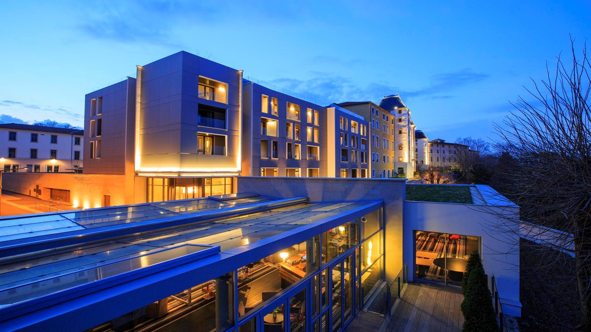
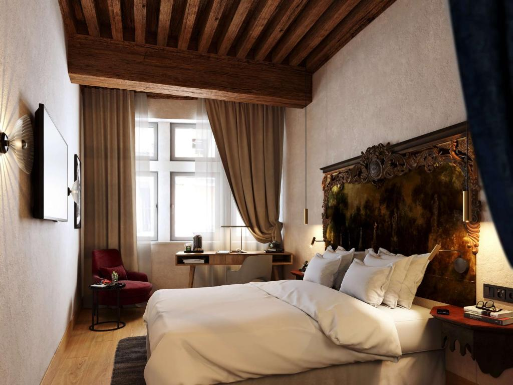
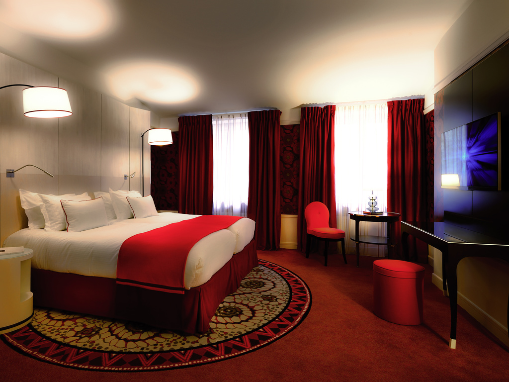
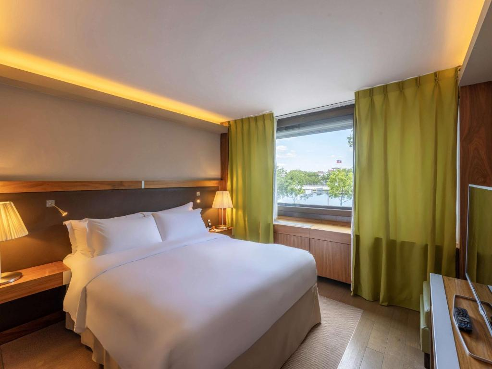
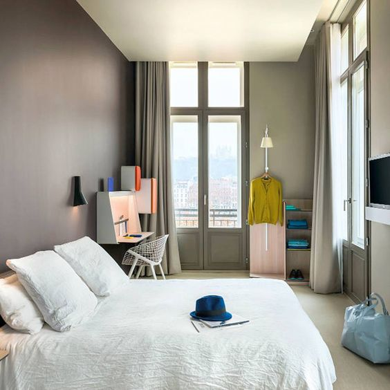

Let's Travel The World!
1.Villa Maïa
Situé sur la colline de Fourvière, cet hôtel de charme opulent offre une vue imprenable sur Lyon depuis toutes les directions. Des chambres spacieuses et d’excellents équipements sont les caractéristiques de la Villa Maïa, qui présente un style exquis et contemporain. En plus de profiter du spa et de la délicieuse cuisine du restaurant sur place, vous pourrez vous détendre dans le joli jardin. C’est l’option idéale pour les personnes à la recherche d’un séjour luxueux et paisible.
Située au sommet de la colline de Fourvière à Lyon, en France, se trouve l’opulente Villa Maïa.L’hôtel dispose de 29 chambres, dont un appartement et 7 suites, toutes avec des éléments de style rétro-futuriste et japonais.Les chambres offrent une vue sur le jardin et une vue sur la ville.Le prix d’un séjour à Villa Maïa varie en fonction du type d’hébergement et des dates de visite. Les tarifs par nuit commencent à $381.38.

2.Cour des Loges
Situé dans le centre du Vieux Lyon, parfois connu sous le nom de Vieille Ville, l’hôtel cinq étoiles Cour des Loges allie le confort contemporain à l’élégance de la Renaissance. L’hôtel dispose d’un restaurant étoilé au guide Michelin, de chambres meublées avec goût, d’une charmante cour et est situé dans un bâtiment historique. Les sites historiques de Lyon sont facilement accessibles depuis leur situation centrale.
Le type de chambre et les dates de séjour ont un impact sur le coût du séjour à Cour des Loges. Les chambres standard commencent à 284 $ par nuit, tandis que les suites sont au prix de 615 $ par nuit. Cependant, le coût peut varier en fonction du type d’hôtel choisi et des dates du séjour. L’emplacement de l’hôtel est excellent, avec de nombreuses attractions accessibles à pied, notamment la cathédrale Saint-Jean-Baptiste, la place Bellecour et la basilique Notre-Dame de Fourvière.

3.Hotel Carlton Lyon
L’élégant et reconnaissable Hôtel Carlton Lyon, qui offre une fusion de style traditionnel et moderne, est situé sur la presqu’île de la Presqu’île. L’hôtel dispose d’une terrasse sur le toit offrant une vue spectaculaire sur la ville, et les chambres spacieuses sont équipées de tout le nécessaire. Les touristes trouveront que c’est une option pratique car il est idéalement situé à proximité des principales attractions de Lyon.
lieu :4 Rue Jussieu, 69002 Lyon, France.Le type de chambre et les dates de séjour ont un impact sur le coût d’un séjour à Hotel Carlton Lyon. Le prix de départ pour une chambre Carlton avec un lit double ou deux lits est de 284 $ par nuit.Cependant, le coût peut varier en fonction du type d’hôtel choisi et des dates du séjour.L’emplacement de l’hôtel est excellent, avec de nombreuses attractions accessibles à pied, notamment la place Bellecour et la place des Terreaux

4.Sofitel Lyon Bellecour
L’élégant Sofitel Lyon Bellecour, avec sa vue imprenable sur le Rhône, offre un service de premier ordre et un hébergement somptueux. L’hôtel propose d’excellentes options de restauration, y compris un restaurant étoilé Michelin bien connu, et les chambres sont bien conçues. C’est une option très appréciée des touristes d’agrément et d’affaires en raison de sa position centrale et de sa vue sur la rivière.
L’hôtel se trouve à 4 minutes à pied de la place Bellecour, dans un emplacement privilégié du centre-ville de Lyon. Sur la base des tarifs moyens, une chambre basique au Sofitel Lyon Bellecour coûte entre 186 $ et 266 $ US par nuit.Des suites sont également disponibles à l’hôtel. Les tarifs par nuit pour ceux-ci varient de 307 $ à 738 $ USD. Une chambre typique contient un lit double.

5.Okko Hotels Lyon Pont Lafayette
Okko Hotels propose une alternative plus contemporaine, à un prix raisonnable, qui ne sacrifie ni le confort ni la qualité. L’hôtel est réputé pour son décor moderne, ses chambres confortables et son concept de « Club » tout compris qui propose des rafraîchissements, des cocktails et des apéritifs gratuits aux visiteurs. Pour ceux qui recherchent un séjour plus économique mais élégant, c’est une excellente option car il est proche du célèbre parc de la Tête d’Or de Lyon.
Each and every room has a queen-sized bed.
The date and booking platform have an impact on the cost of the hotel stay. The
hotel charges between $129 and $143 a night for a stay.
It is crucial to remember that the price of a hotel stay might vary based on a
number of factors, including the date of the reservation.
